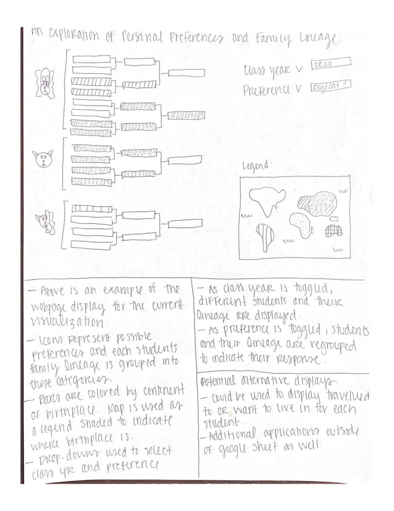

Spring 2020
Homework #1
Assignment #1: Creating an Analog Clock
A series of video tutorials was studied as an introduction to JavaScript. JavaScript is a scripting language of the web. As the web evolves from a static to a dynamic environment, technology focus is shifting from static markup and styling—frequently handled by content management systems or automated scripts—to dynamic interfaces and advanced interaction. Once seen as optional, JavaScript is now becoming an integral part of the web, infusing every layer with its script.
One of the exercises completed in this tutorial was the development of an analog clock that displays the current time.
Assignment #2: Five Design Sheets
The Design-By-Sketching process was created to visualize information provided by students from the 2019 GIS 715 class and the 2020 GIS 715 class. Information included includes spatial information such as birthplace, three locations each student has lived, three locations each student has traveled, where each student would like to live in the future, where each students parents and grandparents were born, and some basic personal preferences including whether they prefer cats, dogs, or both, whether they are colorblind, their favorite number, music preferences, cheese preferences, whether they like spicy food or not, and hobbies.
Sheet #1 is the ideas sheet, where you think and sketch design concepts and consider many possible outcomes.

Sheet #2 through #4 is where you create three main designs. These sheets contain the following elements: Information, layout, operations, focus/parti, and a discussion.
Sheet #5 is the final sheet. It contains a realization of the design with enough detail to allow someone to understand your visions and implement what you have designed.

Assignment #3: Tableau Visualizations
Tableau is a powerful, secure, and flexible end-to-end analytics platform for visualizing data. Tableau Desktop was used to create two visualizations. The first displays election results from the 2016 Presidential Election. Results are visualized to present the winner, either Democratic or Republican, for each county across the United States. Additionally, the number of votes for the winning party is shown for each county.
Another Tableau visualization was created using some of my own dissertation research. This visualization displays the temporal frequency of cyanobacterial blooms in inland lakes across the continental United States. These data are derived from the MEdium Resolution Imaging Spectrometer (MERIS) using data collected in 2011. 4. My visualization allows the user to determine the number of resolvable lakes in a given state and the average cyanobacterial bloom frequency. I anticipate the end-user of this application being one of the state agencies we interact with on a daily basis. They can see how many resolvable lakes their state has compared to the remainder of the states and how their state ranks in bloom frequency compared to the rest of the country. This could also be helpful for directing resources at the national level to focus on states that have the highest frequency of harmful algal blooms.